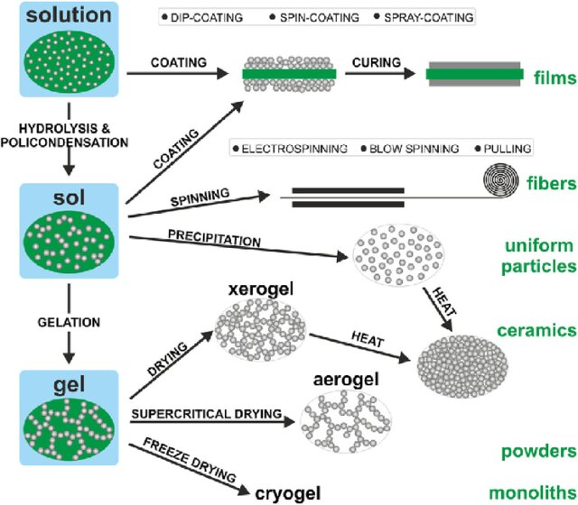
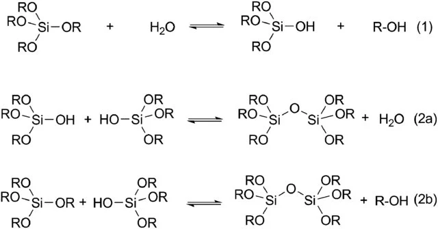

✨ Sol-gel method is a wet-chemical synthesis technique that converts a colloidal solution (sol) into an integrated network (gel) through hydrolysis and condensation reactions, enabling the production of glass, ceramics, and thin films at low temperatures.
The Sol-Gel Process: Hydrolysis and Condensation
Hydrolysis: Metal alkoxides react with water forming metal hydroxide.
Gelation: Condensation creates a 3D network via metal-oxygen-metal bonds. Transforms sol into a solid gel structure.
Aging: Gel strengthens over time in the mother liquor.
Drying: Solvent removal by evaporation or supercritical methods creates xerogels or aerogels.
CalcinationHeat treatment \((400-800^{\circ}C)\) crystallizes the nanomaterial and removes residues.

Example:
- TEOS reacts to form silanol groups and alcohol.
- Upon addition of acid or base condensation is enabled to form gel.

Factors influencing Sol Gel
- Precursor Chemistry: Alkoxide choice changes reaction rate and material properties.
- Water-alkoxide Ratio: High water ratio ensures that most of alkoxide is hydrolyzed, leading to faster complete gelation.
- pH Level: Acid (Low pH) promotes hydrolysis over condensation (linear growth), while Base (High pH) accelerates condensation via deprotonation (rapid branching and gelation).
- Solvent: The choice of solvent affects the sol viscosity and controls how easily condensation byproducts (e.g., alcohol or water) diffuse out of the gel during gelation and aging. Appropriate solvent is needed to dissolve precursor and water.
- Temperature: Higher temperature means more thermal energy, frequent collisions. This speeds up hydrolysis and condensation reducing time taken in sol to gel conversion. It also influences rate of evaporation during drying.
- Time and agitation: Agitation (or stirring) ensures proper homogenization of water, precursor and catalyst. Enough time is required for polycondensation to ensure gel aging and strengthening properly.
- Network Modifier: Act as 'chain terminators' to stop branching in cartain directions. Allows pore size, flexibility and final struture of gel control.
Advantages of Sol-Gel Synthesis
- Low-Temperature Processing
- High Purity
- Versatility
- Scalability
Disadvantages of Sol-Gel Synthesis
- Costly Precursors
- Sluggish Kinetics
- Long Processing Time
- Shrinkage and Cracking
Applications of Sol-Gel Nanomaterials
-
0D Nanomaterials
- Photocatalysis
- Fluorescence-Based Applications
-
1D Nanomaterials
- Nanotube Devices
-
2D Nanomaterials
- Thin Films and Coatings
-
3D Nanomaterials
- Electrochemical Biosensors